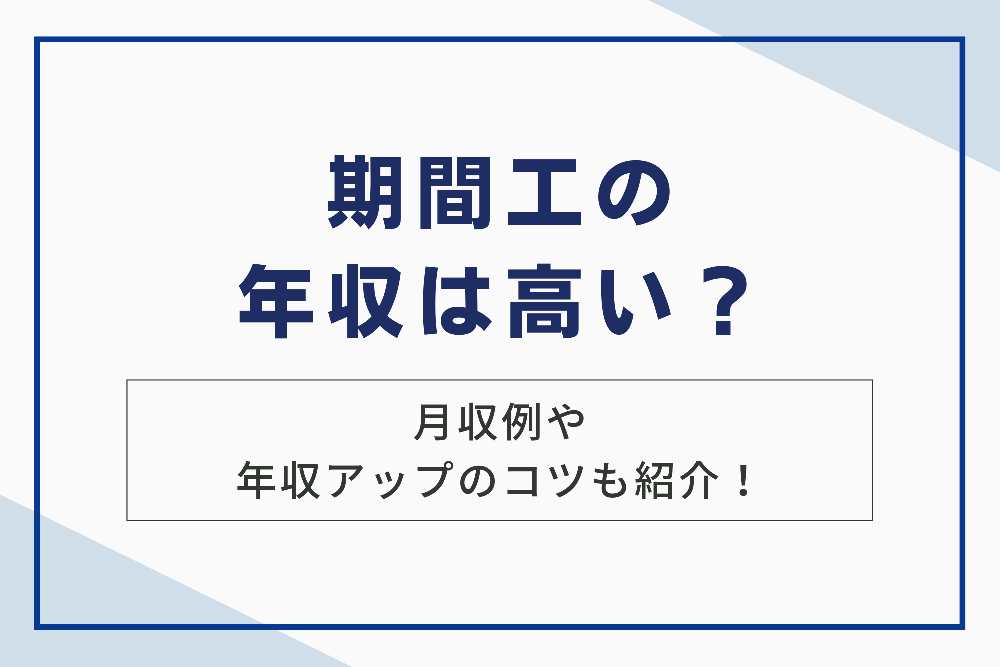
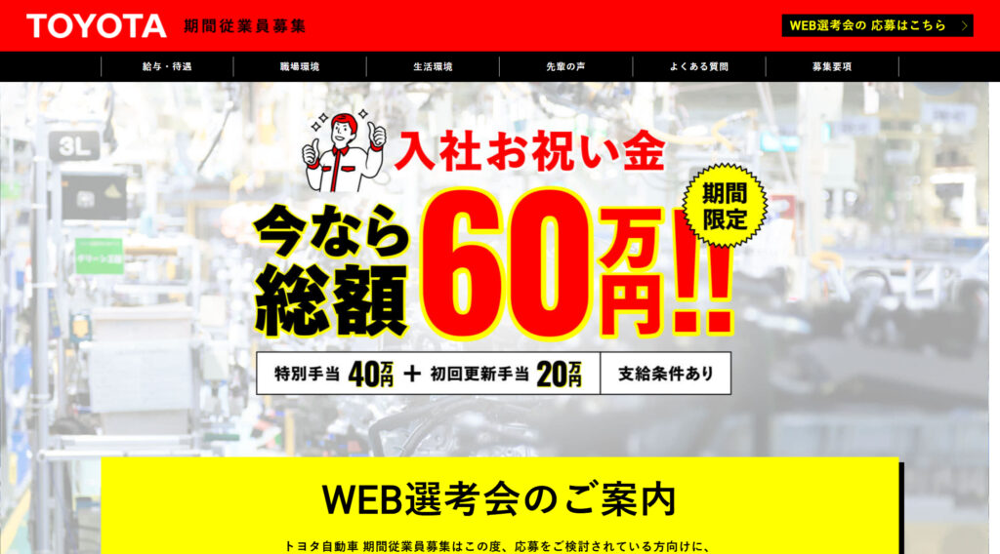
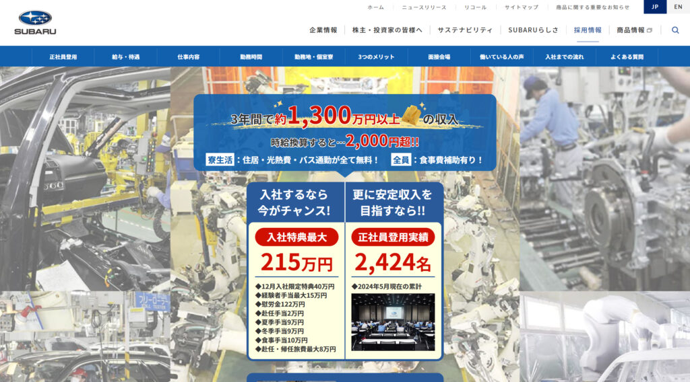

「期間工って実際どれくらい稼げるの？」や「短期間でガッツリ稼ぎたいけど、期間工の年収って本当に高いの？」といった疑問をお持ちの方も多いではないでしょうか。
そこで本記事では平均年収や月収例はもちろん、勤務期間やメーカーによる年収の違い、さらには年収アップのコツまで、期間工の収入に関するあらゆる疑問について解説しますのでぜひ参考にしてみてください。

期間工とは？
期間工は、自動車、自動車部品、電子部品などの製造業において、主に繁忙期や増産体制時に、期間限定の有期雇用契約で働く労働者を指します。
期間工は、特定の専門スキルを必要としない業務も多く、未経験からでも始めやすい点が特徴です。また、短期間で集中的に収入を得られるため、目標のために資金を貯めたい人や、様々な仕事を経験したい人などにも選ばれています。
期間工の働き方と雇用形態
期間工の雇用形態は契約社員ですが、社会保険（雇用保険・労災保険・健康保険・厚生年金保険）に加入することがほとんどで、正社員と扱いはほぼ同等です。
就業6カ月後から有給休暇も取得できます。また、期間工の働き方は主に以下の2つのパターンがあります。
- 昼夜2交代制：日勤と夜勤を1週間ごとに交代する勤務形態
- 3組2交代制：3つのグループに分かれ、日勤、夜勤、休日をローテーションする勤務形態
いずれの勤務形態も、残業や休日出勤が発生することが多く、体力的にハードな仕事です。しかし、その分、給与や各種手当が充実しているため、短期間で高収入を得ることができます。
なお、雇用期間は労働基準法により最長2年11ヶ月と定められています。そのため、期間工として働き続けるためには、契約更新を続けるか、他のメーカーに転職する必要があります。また、メーカーによっては、期間工から正社員への登用制度を設けているところもあります。
参考：有期労働契約の実態に関する資料(企業における利用の状況
正社員や派遣社員との違い
期間工と正社員や派遣社員との違いは、主に「雇用主」と「待遇」の2点です。
雇用主
- 期間工：メーカーの直接雇用
- 派遣社員：派遣会社に所属し、派遣先で勤務
- 正社員：メーカーの直接雇用
期間工は、派遣社員とは異なり、メーカーに直接雇用されるため、社会的信用を得やすく、クレジットカードの作成やローンを組む際に有利です。また、社内での立場も、派遣社員より期間工の方が上位になります。正社員との違いは、雇用期間が定められているかどうかです。
待遇
- 期間工：基本給に加えて、様々な手当が支給される
- 派遣社員：基本給＋残業代が主な給与
- 正社員：基本給に加えて、賞与や各種手当が支給される
一般的に、基本給は派遣社員の方が高い傾向にありますが、期間工には入社祝い金、満了慰労金、皆勤手当など、様々な手当が支給されます。そのため、年収ベースで考えると、期間工の方が高くなる可能性があります。
期間工の平均的な勤務時間と休日
期間工として働く際の勤務時間と休日のパターンは、企業や配属される部署によって異なりますが、一般的には以下のようなスケジュールで勤務することになります。
勤務時間
多くの期間工は、日勤と夜勤の2交代制、または日勤、夕勤、夜勤の3交代制で勤務します。1日の労働時間は7～8時間程度で、これに加えて1～2時間の残業が発生することが一般的です。例えば、以下のような勤務シフトが考えられます。
- 日勤：8:00～17:00（休憩1時間）
- 夜勤：20:00～翌5:00（休憩1時間）
休日
休日は、多くの企業で土日休みの週休2日制が採用されています。ただし、生産ラインの稼働状況によっては、土日出勤が発生する可能性もあります。
また、GW、夏季休暇、年末年始などの長期休暇は、一般的な企業と同様に取得できる場合が多いです。以下は、休日の例です。
- 週休2日制（土日）
- GW休暇（5日程度）
- 夏季休暇（7日程度）
- 年末年始休暇（7日程度）
このように、期間工の勤務時間や休日は、一般的な製造業と大きく変わることはありません。ただし、交代制勤務や休日出勤の可能性があるため、体力的な負担を感じる方もいるかもしれません。

期間工の平均年収と月収例
ここでは期間工の平均年収と月収についてご紹介します。期間工の給与についてより深く知りたい人はぜひ参考にしてください。
期間工の平均年収はどれくらい？
期間工の平均年収は約400万円から500万円です。一方、国税庁が発表した「令和3年分 民間給与実態統計調査」によると、給与所得者の平均給与は正社員が508万円、正社員以外は198万円です。
つまり、期間工は正社員と同程度、正社員以外よりは倍以上稼げるということになります。これに加えて、交代勤務手当や残業手当などのさまざまな手当がついて、月収30万円ほど支給されるケースが多くあります。諸手当を含む月収が35万円の場合、年収は420万円に達する計算になります。
月収例と内訳（基本給、各種手当）

| 項目 | 金額 |
|---|---|
| 基本給 | 212,100円 |
| 時間外手当 | 38,530円 |
| 深夜手当 | 19,400円 |
| 交替制勤務手当 | 22,000円 |
| 赴任手当 | 20,000円 |
| 合計 | 312,030円 |
※赴任手当は、初回給与支払日の在籍者に支払われる。
このように、基本給に加えて各種手当が充実していることがわかります。特に、交替制勤務手当や赴任手当などが、月収を押し上げる要因となっています。
また、入社6カ月目には満了慰労金・満了報奨金として390,400円が支給されるため、月収が大幅にアップします。
参考：T君の給料明細（給与例）｜【公式】トヨタ自動車 期間従業員募集
年収は勤務期間やメーカーによってどう変わる？
期間工の年収は、勤務期間の長さや勤務先のメーカーによって大きく変わります。一般的に、勤務期間が長いほど各種手当や満了慰労金の総額が増えるため、年収も高くなる傾向にあります。
また、メーカーによって基本給や手当の額が異なるため、同じ期間働いても年収に差が出ます。例えば、A社では1年間の勤務で年収400万円、B社では450万円といった具合です。
さらに、同じメーカーでも勤務地によって年収が異なる場合があります。これは、地域によって生活費や物価が異なるため、それを考慮した手当が支給されることがあるためです。
期間工として働く際は、勤務期間とメーカーごとの年収の違いをよく比較検討することが大切です。
期間工の年収が高い4つの理由
ここでは、期間工の年収がなぜ高いのか、その理由を4つに分けて解説します。
1.基本給以外に支給される各種手当が充実
期間工の年収が高い理由の一つとして、基本給以外に支給される各種手当が充実していることが挙げられます。手当には、以下のようなものがあります。
入社祝い金
期間工として入社した際に支給される手当で。メーカーによって異なりますが、10万円から20万円程度のところが多いようです。自動車関連のメーカーは入社祝い金が高い傾向があり、50万円を超える入社祝い金を支給するところもあります。
満了慰労金・報奨金
契約期間を満了した際に支給される手当です。契約期間中の仕事を終えた慰労や、契約期間中の勤務状況に応じたボーナスの意味合いのある手当です。
支給額はメーカーや契約期間によってばらつきがありますが、大手メーカーだと6ヶ月満了のタイミングで月収相当の支給となることもあり、期間工の収入を押し上げる要因になっています。
その他の手当
赴任手当、経験者手当、食費補助など、メーカーによってさまざまな手当が用意されています。また、夜勤がある場合は、深夜手当も支給されます。これらの手当は、期間工の収入を大きく押し上げる要因となっています。
2.満了慰労金・報奨金でモチベーションアップ
満了慰労金は、契約期間を満了した際に支払われる手当で、出勤日数に応じて金額が変動します。例えば「日額1,500円 × 稼働日120日 = 180,000円」といった計算です。
一方、満了報奨金は出勤状況、つまり無遅刻・無欠席・無早退での勤務に対して支払われる、皆勤手当のようなものです。この報奨金は、たとえ1日の欠勤や1分の遅刻があった場合でも、その月の分が全額支給されなくなることがあります。
これらの手当は、期間工の収入を大きく左右する要素であり、働く上でのインセンティブとなります。また、企業によってはこれらの手当に加えて、入社祝い金や皆勤手当など、さまざまな追加手当が用意されるケースも少なくありません。
3.寮費・光熱費無料で生活費を大幅に節約
期間工の多くは、勤務先メーカーが用意している寮に入居することが可能です。寮では、生活に必要な家具や家電は一通り揃っています。
また、寮費や光熱費は勤務先メーカーが負担してくれる場合が多いです。以下は、勤務先メーカーが負担してくれる生活費の一例です。
- 寮費（家賃）＋光熱費は全額会社負担（会社によっては一部を入居者が負担します）
- 工場と寮に食堂を完備（500円以内で食べられるメニューがほとんど）
- 寮〜工場で無料送迎バスを運行
寮費や光熱費だけでなく、食費や交通費も節約できるケースが多いため、短期間でも効率的に貯金を増やすことが可能です。将来のために資金を貯めたいという方が、期間工として働くケースもあります。
4.大手メーカー勤務で安定収入と福利厚生
期間工として働く大きなメリットの一つは、大手メーカーに勤務することで得られる安定した収入と充実した福利厚生です。
安定収入
大手メーカーでは、期間工に対しても基本給に加えて、残業手当や休日出勤手当、夜勤手当など、各種手当を支給しています。また、契約満了ごとに満了慰労金や報奨金が支給されるため、長期間勤務することで、より多くの収入を得ることができます。
福利厚生
大手メーカーでは、期間工も正社員と同様に社会保険に加入できることがほとんどです。健康保険や厚生年金保険に加入することで、病気やけがをした際の医療費負担を軽減したり、将来の年金受給額を増やしたりすることができます。
また、雇用保険に加入することで、失業した際の手当を受給することも可能です。以下は、大手メーカーの期間工に適用される福利厚生の一例です。
| 福利厚生 | 内容 |
|---|---|
| 社会保険 | 健康保険、厚生年金保険、雇用保険、労災保険に加入できる |
| 有給休暇 | 勤続期間に応じて有給休暇が付与される |
| 健康診断 | 定期的に健康診断を受診できる |
| 食堂 | 社員食堂を利用できる |
| 作業服・安全靴 | 無償で貸与される |
| 交通費 | 通勤にかかる交通費が支給される（上限あり） |
| その他 | メーカーによっては、保養所やスポーツ施設などの福利厚生施設を利用できる場合がある |
| 正社員登用制度 | 一定の条件を満たした場合、正社員に登用される可能性がある |
このように、大手メーカーの期間工は、安定した収入を得られるだけでなく、充実した福利厚生の恩恵を受けることができます。
期間工で年収を上げるための4つのコツ
期間工として働く上で、年収アップは大きなモチベーションとなります。ここでは、期間工で年収を上げるための4つのコツをご紹介します。
1.できるかぎり長く働く
期間工として年収を上げるためには、できるだけ長く働くことが重要です。
多くのメーカーでは、長く働くほど日給や満了金が上がる仕組みを採用しています。また、満了金についても、半年で50万円以上支給されるケースも珍しくありません。
さらに、長く働くことで昇給の機会も増えます。求人によっては、年次で昇給するものや長く働いても一律のものがあります。
長期で働く場合は日給や満了金が高く、昇給制度が充実しているメーカーを選ぶと良いでしょう。
2.夜勤や休日出勤で手当を増やす
期間工の求人では、夜勤を含む交代制勤務や休日出勤があることが一般的です。これらの勤務形態を選択することで、基本給に加えて深夜手当や休日出勤手当を得ることができます。
具体的な手当の額はメーカーや勤務地によって異なりますが、夜勤1回につき数千円、休日出勤1日につき1万円以上が支給されることもあります。これらの手当を積み重ねることで、月収を数万円単位で増やすことが可能です。
ただし、夜勤や休日出勤は体力的な負担も大きく、自身の体調と相談しながら無理のない範囲で行うことが重要です。また、メーカーによっては夜勤や休日出勤の頻度が異なるため、求人情報をよく確認して自身の希望に合った職場を選びましょう。
3.資格を取得する
特定の資格を保有していると、資格手当が支給される場合が多く、収入増加に繋がります。また、資格があれば、より専門性の高い業務を担当できる可能性が高まり、結果として収入アップに繋がることもあります。ここでは、期間工におすすめの資格をいくつかご紹介します。
| 資格名 | 概要 |
|---|---|
| フォークリフト運転技能者 | 重量物の運搬に必要な資格。最大積載荷重1トン以上の場合は「フォークリフト運転技能講習」の受講と試験合格が必要。 |
| 溶接技能者 | 素材を溶かしてつなぎ合わせる作業に必要な資格。ガス溶接とアーク溶接の2種類が自動車工場などで役立つ。 |
| 玉掛け技能者 | 重い荷物をクレーンで持ち上げる際に、荷物をフックにかけたり外したりする作業に必要な資格。制限荷重1トン以上の大型クレーンを使用する場合は「玉掛け技能講習」の受講と試験合格が必要。 |
| 危険物取扱者 | 消防法に基づく危険物の取り扱いや、危険物を取り扱う現場に立ち会う際に必要となる資格。特に自動車工場や化学工場で役立つ。 |
期間工は資格がなくても働くことは可能ですが、資格を取得することで、仕事の幅が広がり、収入アップのチャンスも増えます。
4.高収入メーカーに転職する
より高い収入を得るためには、現在働いているメーカーから、より待遇の良いメーカーに転職することも選択肢の一つです。期間工の給与や各種手当は、メーカーによって差があります。以下に、特に待遇が良いとされる2つのメーカーを紹介します。
トヨタ自動車

トヨタ自動車は、愛知県に本社を置く世界最大級の自動車メーカーです。期間工の待遇も非常に良く、高収入を期待できます。
| 項目 | 詳細 |
|---|---|
| 基本給 | 日給10,000円～11,200円 |
| 満了慰労金・報奨金 | 最大3,045,600円（35カ月満了の場合） |
| その他手当 | 食事補助、赴任手当、経験者手当など |
スバル

引用：【公式】SUBARU期間従業員大募集 | 株式会社SUBARU（スバル）
スバルは、群馬県に本社を置く自動車メーカーです。トヨタ自動車と同様に、期間工の待遇が良く、高収入を狙えます。
| 項目 | 詳細 |
|---|---|
| 基本給 | 日給9,770円～10,370円 |
| 満了慰労金・報奨金 | 最大1,694,000円（35カ月満了の場合） |
| その他手当 | 赴任手当、夏季特別手当、正月特別手当など |
これらのメーカーは、基本給の高さに加え、満了慰労金・報奨金、その他の手当が充実しています。また、寮費や水道光熱費が無料の寮を完備しているため、生活費を抑えながら、より多くの収入を手元に残せます。
期間工の年収でよくある3つの質問
ここでは、期間工の年収に関してよくある質問と回答を紹介します。
質問1.年収は年齢や経験によって変わる？
基本的に期間工の給与は年齢や経験に関係なく一律です。ただし、勤務態度が評価されて昇給したり、特別なスキルが評価されて手当が支給されたりする可能性はあります。
質問2.年収以外に期間工で働くメリットは？
以下のようなメリットがあります。
- 寮費や光熱費が無料の求人が多く、生活費を節約できる
- 大手メーカーの正社員登用制度を利用できる可能性がある
- 短期間で集中的に稼げるため、留学や起業などの資金を貯めやすい
質問3.期間工から正社員になるには？
各メーカーが実施している正社員登用試験に合格する必要があります。試験内容は企業によって異なりますが、一般的には筆記試験と面接が行われます。合格率は公表されていませんが、勤務態度や実績が評価されれば、未経験者でも十分にチャンスがあります。
まとめ
本記事では、期間工の年収について詳しく解説しました。期間工は、期間限定の有期雇用契約で働く労働者を指し、主に製造業で活躍しています。
短期間で高収入を得たい方、様々な仕事を経験したい方、目標のために資金を貯めたい方に適した働き方です。本記事を参考に、自身の希望に合ったメーカーや勤務条件を見つけ、期間工として充実した生活を送りましょう。